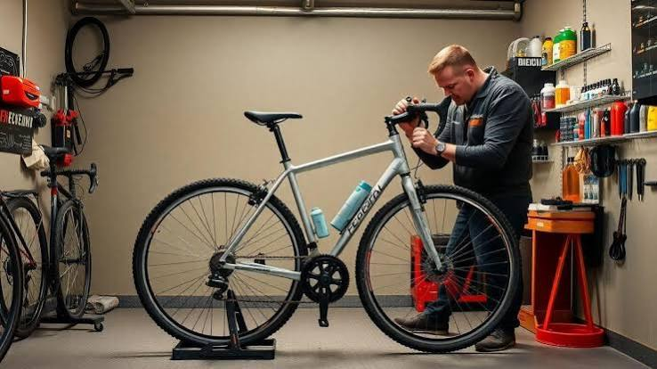

Manual de Manutenção Básica de Bicicleta
Início
Tipos de bike
Manutenção
Galeria
Contato
Galeria de imagens
Mountain bike: pneus largos e cravados para absorver impactos e dar tração em trilhas.

Manutenção simples pode ser feita em casa, com um bom kit de ferramentas por perto.
Áudio e vídeo
Dica em áudio: 5 dicas pra cuidar bem da bike
5-dicas-cuidar-da-bike.mp3
.
Vídeo: como montar uma oficina de bikes na garagem de casa
oficina-de-bikes-em-casa.mp4
.
Créditos e notas sobre os arquivos de mídia